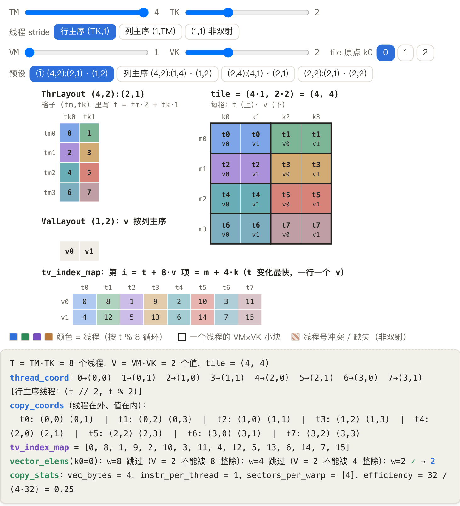
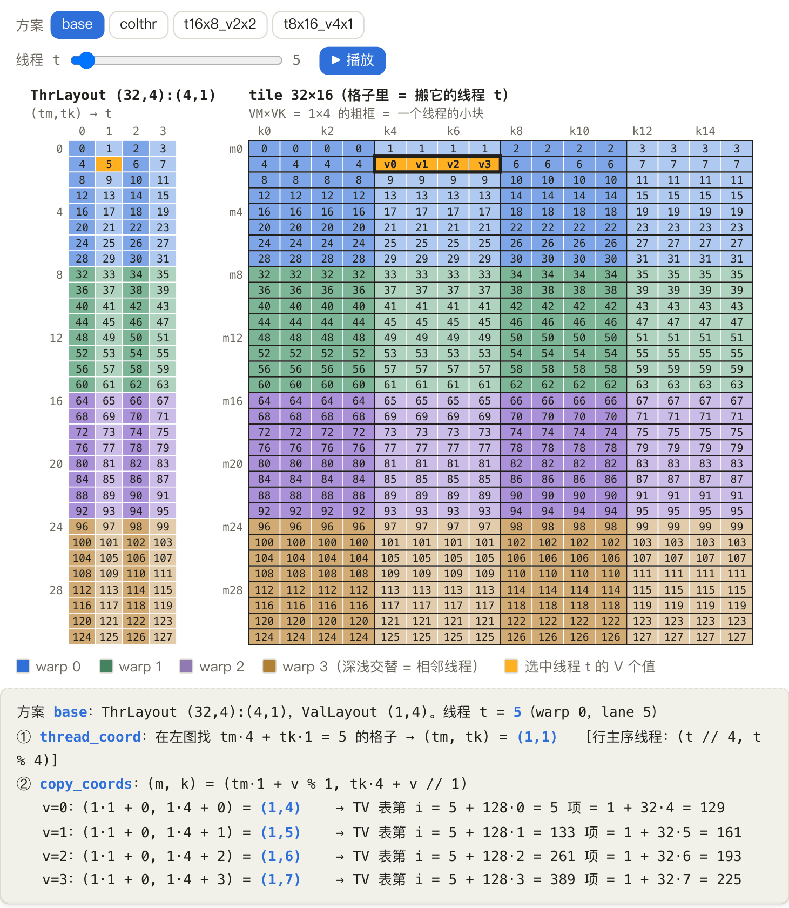
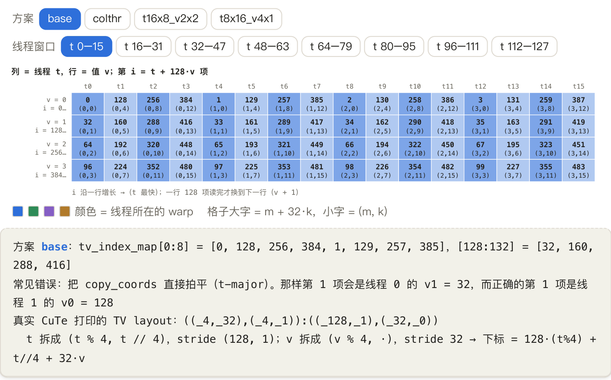
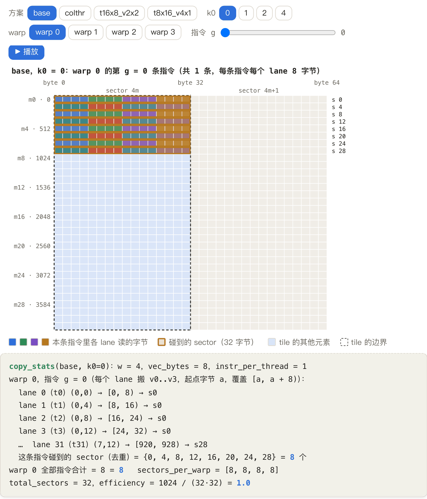
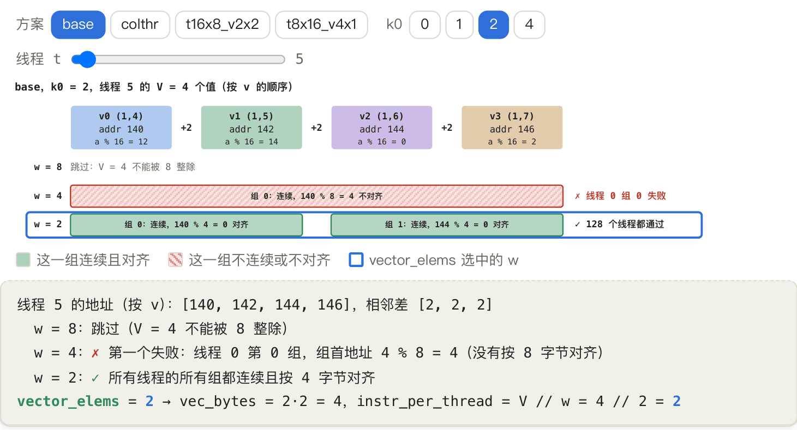
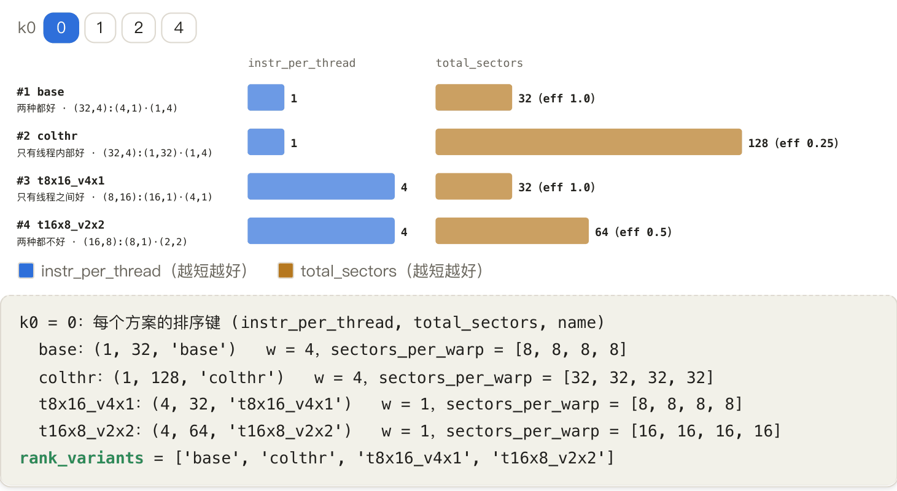

A2 · 线程怎样搬数据：从 ThrLayout / ValLayout 推出 Copy TV 映射，数 sector 与向量宽度
设计 Tiled GEMM 的第二个问题：128 个线程怎样协作把一个 32×16 的 A tile 从 global memory 搬走。本题从 ThrLayout = (32,4):(4,1) 和 ValLayout = (1,4) 出发，自己推出 (thread, value) → (m, k) 的 Copy TV 映射，和真实 make_tiled_copy 逐项对拍，再数两种连续性：一个 warp 碰到几个 sector、一个线程能发多宽的向量访问。
文件: mine/a2_copy_tv.py 你的代码 · tests/test_a2_copy_tv.py 测试 · solutions/a2_copy_tv.py 参考解
题面速览
- 背景知识：先读 从零设计 的“② 线程怎么搬”。
- 在体系里的位置：真实 kernel 用
make_tiled_copy(copy_atom, thr_layout, val_layout)（copy_atom.hpp）。它内部做的正是本题：raked_product(thr, val)得到 (m,k) → (thread, value)，再用right_inverse反过来得到 TV layout。SM80 教程的设置见 sgemm_sm80.cu（16×8 个线程，每线程 8 个 half，128 位cp.async）。 - 你要实现：
thread_coord、copy_coords、tv_index_map、byte_addr、vector_elems、copy_stats、rank_variants。 - 关键规则：
- 线程布局是“线程坐标 → 线程号”；搬运需要它的逆“线程号 → 线程坐标”，所以必须是双射。
- raked：线程 t 的第 v 个值是
(tm·VM + v % VM, tk·VK + v // VM)，值在内、线程在外，值按列主序编号。 - TV 映射的第
i = t + T·v项是 tile 的列主序下标m + 32·k：这就是 CuTeget_layoutS_TV()的完整取值表。 - 向量宽度由“线程内部的连续性”决定：按 v 的顺序，w 个值地址连续且对齐；sector 数由“线程之间的连续性”决定。
验收要点：四种方案的 tile 都是 32×16 · 每个线程的 (m,k) 与真实 partition_S 逐项相同 · TV 取值表与真实 get_layoutS_TV() 相同 · 线程布局求逆 · 非双射报错 · 每个元素恰好被搬一次 · 文档例子：线程 5 搬 (1,4)..(1,7) · 值按 colex 编号 · 字节地址 · 四种方案的向量宽度 · 原点不对齐时向量变窄、sector 变多 · 两种连续性的统计 · 方案排名。
- TV layout（Thread-Value layout）：把 (线程号, 线程内第几个值) 映射到 tile 坐标的 layout。Copy 的 TV layout 回答“谁搬哪个元素”。
- ThrLayout / ValLayout：线程在 tile 上怎么排、每个线程负责的小块形状。两者的乘积覆盖整个 tile。
- sector：global memory 访问的最小单位，32 字节。一个 warp 的一条访存指令碰到的 sector 越少，需要的内存事务越少。
- 向量化访问：一个线程用一条指令读写 8 或 16 字节（例如
LDG.64、LDG.128），前提是这些字节连续且对齐。
直觉与类比
32×16 的 tile 是 512 箱书，128 个搬运工每人搬 4 箱。“线程之间的连续性”像是一辆货车（一个 sector）能不能一次装下好几个人搬的箱子：大家搬同一排相邻的箱子，一辆车就够；大家各搬一排，就要很多辆车。“线程内部的连续性”像是一个人一次能抱几箱：4 箱挨着放，一次抱走（向量访问）；4 箱分散在不同排，只能跑 4 趟（4 条指令）。
图解：从两个小 layout 到一张 TV 表
layout_tv = right_inverse(raked_product(thr, val))（make_tiled_copy）。Track B 会用代数重写这一步，这里先用整数推导。从小例子开始：先在草稿纸上手算
先别管 128 个线程、32×16 的 tile。拿一个小到能把每个格子都写出来的例子手算一遍：8 个线程、每个线程 2 个值、一个 4×4 的 tile。把“谁搬哪个格子”画清楚之后，再放大到测试的运行例子，再看会让结果变差的反例，最后写成一般公式。
① 小：ThrLayout (4,2):(2,1)，ValLayout (1,2)
8 个线程 × 2 个值 = 4×4 的 tile，16 个格子全部能写出来。
线程 5 → (tm,tk) = (2,1) → 搬 (2,2) (2,3)
tv_index_map = [0,8,1,9,2,10,3,11,
4,12,5,13,6,14,7,15]
vector_elems = 2，1 条指令，4 个 sector
② 运行例子：base (32,4):(4,1)，(1,4)
测试里的 128 个线程、32×16 tile。规则和 ① 完全一样，只是数字变大。
线程 5 → (1,1) → 搬 (1,4) (1,5) (1,6)
(1,7)
vector_elems = 4（8 字节），1 条指令
sectors_per_warp = [8,8,8,8]，效率 1.0
③ 反例：只改一个参数
线程 stride 改成 (1,32)、或者把 tile 原点挪到 k0 = 2。
colthr：每个 warp 32 个 sector，共 128，效
率 0.25
base, k0=2：w 掉到 2，2 条指令，共 96 个
sector
t16x8_v2x2：v0、v1 上下相邻 → w = 1，4 条指
令
④ 一般
把 ①–③ 里反复用到的规则写成公式。
(tm,tk) = ThrLayout⁻¹(t)
(m,k) = (tm·VM + v%VM, tk·VK + v//VM)
TV[t + T·v] = m + TILE_M·k
addr = ((m0+m)·ld + (k0+k))·2
✎ 草稿纸：ThrLayout (4,2):(2,1)，ValLayout (1,2)，ld = 64，half（2 字节）
1) 线程布局求逆 t = tm·2 + tk·1，把 8 个坐标全部代进去：
(0,0)→0 (0,1)→1 (1,0)→2 (1,1)→3 (2,0)→4 (2,1)→5 (3,0)→6 (3,1)→7
0..7 各出现一次 → 是双射。反过来读：thread_coord(t) = (t // 2, t % 2)，例如 t=5 → (2,1) 2) tile 形状 = (TM·VM, TK·VK) = (4·1, 2·2) = (4, 4)；每个线程的小块是 1×2（同一行两个相邻格子）
线程 5 = (2,1)：v=0 → (2·1 + 0%1, 1·2 + 0//1) = (2,2)
v=1 → (2·1 + 1%1, 1·2 + 1//1) = (2,3)
整张 tile（格子里写 t·v）：
k=0 k=1 k=2 k=3
m=0 t0·v0 t0·v1 t1·v0 t1·v1
m=1 t2·v0 t2·v1 t3·v0 t3·v1
m=2 t4·v0 t4·v1 t5·v0 t5·v1
m=3 t6·v0 t6·v1 t7·v0 t7·v1 ← 16 格恰好各一次
3) TV 表：第 i = t + 8·v 项 = m + 4·k（t 变化最快）
i = 0..7 (v=0)：t0..t7 的 v0 = (0,0)(0,2)(1,0)(1,2)(2,0)(2,2)(3,0)(3,2) → 0, 8, 1, 9, 2, 10, 3, 11
i = 8..15 (v=1)：t0..t7 的 v1 = (0,1)(0,3)(1,1)(1,3)(2,1)(2,3)(3,1)(3,3) → 4, 12,
5, 13, 6, 14, 7, 15
4) 字节地址 (m·64 + k)·2：线程 5 的 v0 = (2·64 + 2)·2 = 260，v1 = (2·64 + 3)·2 = 262
vector_elems：w=8、w=4 跳过（V = 2 不能整除）；w=2：260 → 262 相差 2 ✓，260 % 4 = 0 ✓
8 个线程都满足 → w = 2，vec_bytes = 4，instr_per_thread = 2 // 2 = 1
换成 k0 = 1：线程 0 的组首 = (0·64 + 1)·2 = 2，2 % 4 ≠ 0 → w=2 失败 → w = 1，2 条指令
5) sector（32 字节一格，sector 号 = byte // 32）：8 个线程都在 warp 0，只有 1 条指令
第 m 行的 tile 占字节 [128m, 128m + 8) → 都在 sector 4m 里 → {0, 4, 8, 12} = 4 个
efficiency = tile 字节数 / (sector 数·32) = 32 / 128 = 0.25 ← tile 一行只有 8 字节，每个 sector 只用到 1/4
换成列主序线程 (4,2):(1,4)：线程 1 = (1,0) 搬 (1,0)(1,1)，格子换了主人，但同一个 warp 碰到的 sector 还是这 4 个
→ 小例子整张 tile 都在同一个 warp 里，看不出“线程之间的连续性”。这要到 ② 的规模才看得出来：
6) 放大到 base：warp 0 = 线程 0..31 = 第 0..7 行，每行 4 个线程 × 8 字节 = 32 字节 = 正好 1个 sector → 8 个
colthr (1,32)：warp 0 = 线程 0..31 = 第 0..31 行的 k = 0..3，每个 lane 一行 → 32 个
sector，每个只用 8 字节
下面这张图可以随意改小参数（tile 每一维不超过 8）。左上是线程布局（格子里是线程号），左下是值布局（格子里是值号 v），右边是 tile：每个格子写着它归哪个线程 t、是这个线程的第几个值 v，粗框是一个线程的小块。底下一行是 tv_index_map 的取值表。下方面板打印你的函数对这组参数应该返回的结果。先用默认预设对照草稿纸，再切到“(1,1) 非双射”看
thread_coord 为什么要报错。

图解详解：TV 映射、sector 与向量宽度
这些图是交互版讲解页的静态快照，显示的是默认参数下的状态。文中提到的按钮、滑块和悬停提示在这里不能操作；图上的数字和下方的文字、表格、黑底面板说的是同一组值，可以直接对照你的函数输出。
这一节把整道题拆成五张可交互的图，每张对应一两个要实现的函数。四种方案都能切换。下方黑底面板会把当前状态逐步代入公式。先看整道题在一个 kernel 里对应什么（伪代码，只保留坐标和地址部分）：
t = threadIdx.x # 0..127
tm, tk = thread_coord(thr_shape, thr_stride, t) # ① 线程布局求逆（图 1）
for g in range(V // w): # ③ 每个线程发 V/w 条访存指令（w = vector_e
vs = range(g*w, (g+1)*w) # 第 g 条指令搬值 v = g·w .. g·w+w-1
m, k = tm*VM + vs[0] % VM, tk*VK + vs[0] // VM # ② raked 公式 → tile 坐标（图 1、图 2
a = byte_addr(m, k, m0, k0, ld) # 一个 warp 的 32 个 a 落在几个 32 字节
reg[vs] = load_w_halves(A_bytes + a) # LDG.64 (w=4) / LDG.32 (w=2) / LDG.1
图 1 · 线程布局求逆 + raked：thread_coord / copy_coords
左边是 ThrLayout：格子 (tm, tk) 里写的是 t = tm·s0 + tk·s1 。搬运时线程只知道自己的 t，所以要反过来在左图里找到写着 t 的格子，得到 (tm, tk)。右边是 32×16 的 tile，每个格子写着搬它的线程号，颜色表示 warp（t // 32）。拖动 t 或者点播放，看高亮的 V 个格子（写着 v0..v3）怎样在 tile 上移动：
- base：t 每加 1，向右挪 4 列；每 4 个线程换一行。一个 warp（同一种颜色）是 8 整行。
- colthr：t 每加 1，向下挪 1 行；一个 warp 是第 0 列块的 32 行。每个线程搬的东西和 base 一样宽，只是邻居换了方向。
- t16x8_v2x2：每个线程是 2×2 小块，v0、v1 上下相邻（值按列主序编号）。t8x16_v4x1：每个线程是一列上的 4 个格子。

对照源码：make_tiled_copy 先做 raked_product(thr_layout, val_layout) （得到 (m,k) → (thread, value)），再 right_inverse 得到 (thread, value) → (m,k)，见 make_tiled_copy ；raked_product 本身在 layout.hpp ，right_inverse 在 layout.hpp 。每个线程拿到自己那份的是 partition_S 。CuTe 官方教程里一个完全同构的例子（thr_layout (32,8) 、val_layout (4,1) ）在 tiled_copy.cu 。
图 2 · TV 表的下标顺序：tv_index_map
copy_coords 按“线程在外、值在内”列出坐标（t-major），而 CuTe 的 get_layoutS_TV() 是一个形状为 (T, V) 的
layout，它的一维取值表按 colex 顺序排列：t 变化最快。所以第 i 项是 t = i % 128, v = i // 128 。下面把这张表画成 V 行 × 128 列（一行一个 v），一次看 16 个线程。格子里是 m + 32·k （tile 的列主序下标），小字是 (m,k)。注意 i 是沿一行增长的，读完 128 个线程的 v0 才轮到 v1。

源码对照：get_layoutS_TV() 的定义在 copy_atom.hpp ；layout 的一维下标按 colex 顺序拆成多维坐标的规则见 CuTe 文 档 01_layout.md。
图 3 · 线程之间的连续性：一个 warp 的一条指令碰几个 sector
这张图画的是 global memory 本身：A 是行主序、ld = 64 个 half，所以 A 的每一行是 128 字节 = 4 个 sector。图里每行只画前 64 字节（2 个 sector，中间的竖虚线是 sector 边界），足够装下 32 字节宽的 tile 行（虚线框，从第 k0 个元素开始）。选一个 warp 和它的第 g 条指令：彩色格子是这条指令里 32 个 lane 实际读的字节（颜色 = lane % 8），橙色框是被碰到的 sector。sector 号 = byte // 32 ，第 m 行的两个 sector 号是 4m 和 4m+1。
- base：warp 0 只占 8 行，每行正好 1 个 sector 全用满 → 8 个。
- colthr：warp 0 占 32 行，每行只读 8 字节，却要碰 1 个 sector → 32 个，每个只用 1/4。
- t8x16_v4x1：每条指令只读 2 字节，但 32 个 lane 拼成 2 整行 → 每条指令 2 个 sector，4 条共 8 个。
- k0 = 2：tile 行跨过 sector 边界，每行要碰 2 个 sector；而且 w 从 4 掉到 2，指令数翻倍。

为什么数 sector：一条 warp 级的 global 访存指令，硬件按 32 字节 sector 为单位发出内存事务，碰到的 sector 越少，浪费的带宽越少。见 CUDA C++ Best Practices Guide · Coalesced Access to Global Memory 和 CUDA C++ Programming Guide · Device Memory Accesses。本题的 copy_stats 只数“碰到了几个 sector”，是这个模型最简单的版本。
图 4 · 线程内部的连续性：vector_elems
向量宽度看的是一个线程按 v 的顺序排出的 V 个地址。从 w = 8 往下试：先排除 w·2 > 16 字节和 V 不能被 w 整除的；剩下的 w 要求每一组 v ∈ [g·w, (g+1)·w) 地址逐个相差 2，并且组首地址是 2w 的倍数。所有线程都满足才算通过（图里画的是选中的线程，面板会报告第一个失败的线程）。试试：base 的 k0 = 2 时为什么 w = 4 不行；t16x8_v2x2 的 v0→v1 为什么相差 128。

对照：真实 kernel 里 w 是由 Copy_Atom 的类型决定的（例如UniversalCopy<uint_byte_t<sizeof(Element)·size(val_layout)>> ，见 tiled_copy.cu ；SM80 的 cp.async 128 位见 sgemm_sm80.cu ）。本题反过来问“最多能用多宽”。对齐要求来自硬件：向量 load/store 的地址必须是访问宽度的倍数，见 CUDA C++ Programming Guide · Device Memory Accesses。
图 5 · 两种连续性放在一起：rank_variants
排名键是 (instr_per_thread, total_sectors, name) ：先比指令数（线程内部的连续性），再比 sector 数（线程之间的连续性），最后按名字。在 k0 = 0 时四个方案正好落在四个象限。切换 k0 看排名怎样变化：k0 = 2 时 base 的指令数变 2，但仍然排第一；k0 = 1 时所有方案都只能 w = 1（4 条指令），只剩 sector 数决定名次，base 掉到第 3，t8x16_v4x1 反而第一。

速查：全部公式
| 函数 | 公式 / 规则 | base 的值 |
|---|---|---|
thread_coord(thr_shape, thr_stride, t) |
在所有 (tm,tk) 里找 tm·s0 + tk·s1 = t ；线程号必须恰好是 0..T−1 各一次，否则 ValueError |
t=5 → (1,1)；行主序即 (t//4, t%4) |
copy_coords(…) |
线程 t 在外、v 在内：(tm·VM + v%VM, tk·VK + v//VM) ；tile = (TM·VM, TK·VK) |
t=5 → (1,4) (1,5) (1,6) (1,7) |
tv_index_map(…) |
第 i 项：t = i % T, v = i // T ，取 m + TILE_M·k （即 cs[t·V + v] ） |
[0, 128, 256, 384, 1,…] |
byte_addr(m, k, m0, k0, ld, eb) |
((m0+m)·ld + (k0+k))·eb |
(1,4) → 136 |
vector_elems(…) |
w ∈ {8,4,2,1}，w·eb ≤ 16 、V % w == 0 ；所有线程每组地址差 eb 且组首 % (w·eb) == 0，取最大的 |
4（k0=2 时 2） |
copy_stats(…) |
每 32 个线程一个 warp；每条指令 g 收集 [a, a+vec_bytes) 的 byte // 32 去重；efficiency = tile 字节 / (total·32) |
[8,8,8,8]，32，1.0 |
rank_variants(variants) |
按 (instr_per_thread, total_sectors, name) 升序 |
base, colthr,t8x16_v4x1,t16x8_v2x2 |
记住两句话：线程之间看“同一条指令里 32 个 lane 的地址挤在几个 sector”（由 ThrLayout 决定邻居方向）；线程内部看“一个线程按 v 顺序的地址是否连续、对齐”（由 ValLayout 的形状和编号顺序、以及 tile 原点决定）。
逐步演示
ThrLayout (32,4):(4,1)：线程 t 的坐标是 (t // 4, t % 4)；ValLayout (1,4)：4 个值在同一行。线程 5 搬 (1,4) (1,5) (1,6) (1,7)（真实 CuTe 的 partition_S 也是这四个）。每个 warp 32 个线程覆盖 8 整行 × 32 字节 = 8 个 sector；每个线程 8 字节连续 → 1 条指令。4 个 warp 共 32 个 sector，效率 1.0。
同样的形状，stride 改成 (1,32)：相邻 lane 沿 M 往下走。每个线程仍有 8 字节连续（1 条指令），但一个 warp 的 32 个 lane 落在 32 个不同的行上，每行碰一个 sector：每个 warp 32 个 sector，总共 128 个，效率只有 0.25。线程内部连续，线程之间不连续。
ThrLayout (8,16):(16,1)、ValLayout (4,1)：每个线程搬一列上的 4 个元素。线程内部不连续，只能 4 条 2 字节指令；但每条指令里整个 warp 覆盖 2 整行，总 sector 数仍是 32。线程之间连续，线程内部不连续。
ValLayout (2,2) 按列主序编号，v0、v1 是上下相邻的两个元素，v0、v2 才在同一行。按值的顺序看没有连续的两个 → 4 条指令；每个 warp 4 条指令共碰 16 个 sector，总共 64 个。排名：base < colthr < t8x16_v4x1 < t16x8_v2x2（先比指令数，再比 sector）。
再看一个容易忽略的点：同样是 base 方案，如果 tile 原点 k0 = 2（不是 4 的倍数），每组 4 个值的起点只有 4 字节对齐，向量宽度掉到 2，指令数变 2，每个 warp 碰 24 个 sector，总数 96。文档说“每线程 4 个连续 half 是 8 bytes 的连续数据，但最终能否发出某种特定宽度的向量 load/store，还要看地址对齐”，说的就是这种情况。
易错点
- 忘了求逆。 ThrLayout 是“坐标 → 线程号”，不是“线程号 → 坐标”。
(32,4):(4,1)的线程 5 在 (1,1)，不在 (5,0)。测试test_thread_coord_inverts_thread_layout。 - 值按行主序编号。 CuTe 的值按 colex（列主序）编号。
test_values_are_numbered_colex用 t16x8_v2x2 抓这个：v1 是 (1,0)，不是 (0,1)。 - TV 表的下标顺序。 第 i 项是
t = i % T, v = i // T（线程维最快），不是 t-major。测试test_tv_index_map_matches_real_get_layoutS_TV。 - 只看线程内部连续。 colthr 每个线程 8 字节连续，但 sector 数是 base 的 4 倍。测试
test_stats_two_kinds_of_contiguity。 - 忘了对齐。 连续不等于能发向量指令。测试
test_misaligned_origin_shrinks_vector。
对照文档
“这里必须同时检查两种连续性：线程之间的连续性：同一个 warp 的不同 lane 访问的地址是否集中、连续，能否减少 Global Memory transaction。线程内部的连续性：同一个线程负责的多个 value 是否连续、对齐，能否合并成向量化访问。这两个条件不是一回事。……于是我们需要一张表，把‘线程 t 的第 v 个 value’映射到 tile 的矩阵坐标：Copy TV Layout: (t,v) → (m,k)。”
本题的四种方案正好把“两个条件不是一回事”拆成了四个象限：两种都好（base）、只有线程内部好（colthr）、只有线程之间好（t8x16_v4x1）、都不好（t16x8_v2x2）。
上机验证
playground/run.sh playground/a2_copy_tv.cpp # 真实 CuTe 的 make_tiled_copy
./check.sh oracle a2 # 重新生成 tests/golden/a2_copy_tv.json
本机的真实输出：
tiler : (_32,_16)
TV layout : ((_4,_32),(_4,_1)):((_128,_1),(_32,_0))
thread 0 : (0,0) (0,1) (0,2) (0,3)
thread 1 : (0,4) (0,5) (0,6) (0,7)
thread 4 : (1,0) (1,1) (1,2) (1,3)
thread 5 : (1,4) (1,5) (1,6) (1,7)
thread 127 : (31,12) (31,13) (31,14) (31,15)
读 TV layout：线程号 t 拆成 (t % 4, t // 4)，对应列主序下标的 stride (128, 1)，即 k 组 ×128（4 列 × 32 行）和 m ×1；值 v 的 stride 是 32（下一列）。所以线程 t 的第 v 个值在下标 128·(t%4) + t//4 + 32·v，也就是 m = t//4, k = 4·(t%4) + v。golden 里用的是 1 个 half 的 atom，打印成 ((_4,_32),(_1,_4)):((_128,_1),(_0,_32))：形状不同，取值表完全相同。
三级提示
L1I/O 例子和关键问题方向（轻度剧透）
thread_coord((32, 4), (4, 1), 5) # (1, 1)
copy_coords((32, 4), (4, 1), (1, 4))[20:24] # [(1, 4), (1, 5), (1, 6), (1, 7)]
copy_stats((32, 4), (1, 32), (1, 4))["total_sectors"] # 128
copy_stats((32, 4), (4, 1), (1, 4), k0=2)["sectors_per_warp"] # [24, 24, 24, 24]
rank_variants(VARIANTS) # ['base', 'colthr', 't8x16_v4x1', 't16x8_v2x2']
关键问题
- ThrLayout 的逆为什么必须存在？什么样的 ThrLayout 不可逆？
- 为什么一个 warp 的 sector 数是 base 方案的 8，而不是 32？
- 线程内部有 2 个元素连续（像 t16x8_v2x2 的 v0、v2），为什么还是不能发 4 字节指令？
L2思路拆解与常见坑拆解与常见坑（中度剧透）
thread_coord：枚举所有 (tm, tk)，算线程号，存进反查表；检查线程号恰好是 0..T−1 各一次。copy_coords：两层循环，线程在外、值在内，用 raked 公式。tv_index_map：先拿到 t-major 的坐标表cs，第 i 项取cs[(i % T)·V + i // T]。vector_elems：从 w = 8 往下试，检查每个线程每组 w 个值的地址相差 2 字节且组首按 2w 对齐。copy_stats：每 32 个线程一组，每条指令收集[addr, addr + vec_bytes)覆盖的 sector 集合。
L3关键问题的答案几乎是答案（重度剧透）
答案
- 搬运时每个线程都要知道自己的坐标，所以必须能从线程号唯一反推坐标。stride 让两个坐标算出同一个线程号（例如
(4,4):(2,1)），或者某些线程号没有坐标，都不可逆。 - 一个 warp 的 32 个线程是 8 行 × 每行 4 个线程，每行 4 × 8 字节 = 32 字节，正好 1 个 sector，所以 8 个；colthr 每个线程独占一行，就是 32 个。
- 向量访问取的是“按值顺序相邻”的几个值：CuTe 的 copy atom 一次拿 ValLayout 的前 w 个值，v0 和 v1 上下相邻、地址差 128 字节，所以不能合并。想让 v0、v1 同行，ValLayout 要写成
(2,2):(2,1)（行主序编号）。
参考解
✓solutions/a2_copy_tv.py先自己写完、跑过测试再看
"""A2 · 线程怎样搬数据：Copy TV 映射、sector 与向量宽度 — reference solution.
从零设计 Tiled GEMM 的第二个问题：**128 个线程怎样协作把一个 32×16 的 A tile 从 global memory 搬走？**
文档里的设计是 ThrLayout = (32,4):(4,1)、ValLayout = (1,4)：每个线程搬同一行上 4 个连续的half。
本题从这两个 layout 出发，不用 CuTe API，自己推出 Copy TV 映射 (thread, value) → (m, k)，再数两种连续性：
线程之间（一个 warp 碰到几个 32 字节 sector）和线程内部（一个线程能合并成多宽的向量访问）。
期望值来自 oracle/a2_copy_tv.cpp：真实 CuTe 的 make_tiled_copy(...).get_layoutS_TV()和
get_slice(t).partition_S(identity tensor)。
规则
- 线程布局 thr = (thr_shape, thr_stride)，thr_shape = (TM, TK)：线程坐标 (tm, tk) 的线程号是
tm·thr_stride[0] + tk·thr_stride[1]。它必须是 [0, TM·TK) 上的双射，否则 ValueError。
thread_coord(thr_shape, thr_stride, t) 返回线程 t 的坐标 (tm, tk)（即线程布局的逆）。
- 值布局 val_shape = (VM, VK)，按 colex（列主序）编号：第 v 个值的局部坐标是 (v % VM, v //VM)。
- tile 形状 = (TM·VM, TK·VK)。线程 t 的第 v 个值复制的 tile 坐标（“raked”：值在内、线程在外）：
(m, k) = (tm·VM + v % VM, tk·VK + v // VM)
- copy_coords(...) 返回 [(m,k)]，先按线程 t = 0..T−1，再按值 v = 0..V−1（和 oracle 的 *_coords 顺序一致）。
- tv_index_map(...) 返回长度 T·V 的列表：第 i = t + T·v 项是 (m, k) 在列主序 tile 里的线性下标 m + TILE_M·k
（这就是 CuTe get_layoutS_TV() 这个 layout 的完整取值表）。
- global 地址：A 是行主序、leading dimension = ld 的 half 矩阵，tile 原点 (m0, k0)：
byte_addr(m, k) = ((m0 + m)·ld + (k0 + k))·elem_bytes
- vector_elems(...)：在 w ∈ {8, 4, 2, 1}（且 w·elem_bytes ≤ 16、V % w == 0）里取最大的w，使得每个线程的
每一组值 v ∈ [g·w, (g+1)·w) 的字节地址都是连续递增的（相差 elem_bytes），且组首地址按 w·elem_bytes 对齐。
- copy_stats(...) 返回 dict：
vec_elems = w，vec_bytes = w·elem_bytes，instr_per_thread = V // w
sectors_per_warp = [每个 warp 所有指令触碰的 32 字节 sector 数之和]（warp = 连续 32 个线程号）
一条指令 g 里，线程覆盖字节 [addr, addr + vec_bytes)，sector = byte // 32，按 warp 去重计数
total_sectors = sum(sectors_per_warp)
efficiency = tile 的总字节数 / (total_sectors·32)
- rank_variants(variants) 接收 {name: (thr_shape, thr_stride, val_shape)}，按
(instr_per_thread, total_sectors, name) 升序返回名字列表：先少发指令，再少碰 sector。
API
is_tuple, flatten, fmt_tuple, fmt_layout, parse_tuple, parse_layout given（tools/cute_given.py）
thread_coord(thr_shape, thr_stride, t) -> (int, int)
copy_coords(thr_shape, thr_stride, val_shape) -> list[(int, int)]
tv_index_map(thr_shape, thr_stride, val_shape) -> list[int]
byte_addr(m, k, m0=0, k0=0, ld=64, elem_bytes=2) -> int
vector_elems(thr_shape, thr_stride, val_shape, m0=0, k0=0, ld=64, elem_bytes=2)-> int
copy_stats(thr_shape, thr_stride, val_shape, m0=0, k0=0, ld=64, elem_bytes=2) -> dict
rank_variants(variants, m0=0, k0=0, ld=64, elem_bytes=2) -> list[str]
"""
from __future__ import annotations
def is_tuple(x) -> bool:
return isinstance(x, tuple)
def flatten(t) -> tuple:
"""(2, (3, 4)) -> (2, 3, 4); 5 -> (5,)."""
if not is_tuple(t):
return (t,)
out = ()
for e in t:
out += flatten(e)
return out
def fmt_tuple(t, static: bool = True) -> str:
"""Format an IntTuple the way cute::print does: (_2,(_3,_4)) for static ints."""
if is_tuple(t):
return "(" + ",".join(fmt_tuple(e, static) for e in t) + ")"
return ("_" if static else "") + str(t)
def fmt_layout(shape, stride, static: bool = True) -> str:
"""cute::print of a Layout: "<shape>:<stride>"."""
return fmt_tuple(shape, static) + ":" + fmt_tuple(stride, static)
def parse_tuple(s: str):
"""Inverse of fmt_tuple. Accepts '_4' or '4'. '(_2,(_3,_4))' -> (2, (3, 4))."""
s = s.strip()
pos = 0
def parse():
nonlocal pos
if s[pos] == "(":
pos += 1
items = []
while s[pos] != ")":
items.append(parse())
if s[pos] == ",":
pos += 1
pos += 1
return tuple(items)
start = pos
while pos < len(s) and s[pos] not in ",)":
pos += 1
tok = s[start:pos].lstrip("_")
return int(tok)
v = parse()
if pos != len(s):
raise ValueError(f"trailing characters in {s!r}")
return v
def parse_layout(s: str):
"""'(_4,_8):(_8,_1)' -> ((4, 8), (8, 1)). A swizzled/composed layout is not accepted."""
shape_s, stride_s = _split_top_colon(s.strip())
return parse_tuple(shape_s), parse_tuple(stride_s)
def _split_top_colon(s: str):
depth = 0
for i, ch in enumerate(s):
if ch == "(":
depth += 1
elif ch == ")":
depth -= 1
elif ch == ":" and depth == 0:
return s[:i], s[i + 1:]
raise ValueError(f"no top-level ':' in {s!r}")
# ---- A2: your code ----
def thread_coord(thr_shape, thr_stride, t: int) -> tuple:
"""线程 t 在线程布局里的坐标 (tm, tk)；线程布局不是双射时 ValueError。"""
TM, TK = thr_shape
s0, s1 = thr_stride
# 线程布局是“坐标 → 线程号”的函数；搬运时我们需要反过来“线程号 → 坐标”，所以要求它是双射
# （CuTe 里 make_tiled_copy 用 right_inverse 做同一件事，B 组再用代数重写）。
inv = {}
for tk in range(TK):
for tm in range(TM):
inv.setdefault(tm * s0 + tk * s1, []).append((tm, tk))
if sorted(inv) != list(range(TM * TK)) or any(len(v) != 1 for v in inv.values()):
raise ValueError("thread layout is not a bijection onto [0, size)")
if not 0 <= t < TM * TK:
raise ValueError("thread id out of range")
return inv[t][0]
def copy_coords(thr_shape, thr_stride, val_shape) -> list:
"""[(m, k)]：线程 t = 0..T-1，每个线程的值 v = 0..V-1。"""
TM, TK = thr_shape
VM, VK = val_shape
out = []
for t in range(TM * TK):
tm, tk = thread_coord(thr_shape, thr_stride, t)
for v in range(VM * VK):
# raked：一个线程的 VM×VK 个值是一个小块，线程网格决定小块放在哪里。
out.append((tm * VM + v % VM, tk * VK + v // VM))
return out
def tv_index_map(thr_shape, thr_stride, val_shape) -> list:
"""第 i = t + T·v 项 = (m, k) 在列主序 tile 里的下标 m + TILE_M·k。"""
T = thr_shape[0] * thr_shape[1]
V = val_shape[0] * val_shape[1]
tile_m = thr_shape[0] * val_shape[0]
cs = copy_coords(thr_shape, thr_stride, val_shape)
# copy_coords 是 t-major；TV layout 的 colex 顺序是“线程维最快”，所以要转置一下下标。
return [cs[(i % T) * V + i // T][0] + tile_m * cs[(i % T) * V + i // T][1] for i in range(T * V)]
def byte_addr(m: int, k: int, m0: int = 0, k0: int = 0, ld: int = 64, elem_bytes: int = 2) -> int:
"""行主序 A 里 tile 元素 (m, k) 的字节地址。"""
return ((m0 + m) * ld + (k0 + k)) * elem_bytes
def _per_thread_addrs(thr_shape, thr_stride, val_shape, m0, k0, ld, elem_bytes):
V = val_shape[0] * val_shape[1]
cs = copy_coords(thr_shape, thr_stride, val_shape)
return [[byte_addr(m, k, m0, k0, ld, elem_bytes) for (m, k) in cs[t * V:(t + 1)* V]]
for t in range(len(cs) // V)]
def vector_elems(thr_shape, thr_stride, val_shape, m0=0, k0=0, ld=64, elem_bytes=2)-> int:
"""每个线程一次能合并多少个值成一个向量访问。"""
V = val_shape[0] * val_shape[1]
addrs = _per_thread_addrs(thr_shape, thr_stride, val_shape, m0, k0, ld, elem_bytes)
for w in (8, 4, 2, 1):
if w * elem_bytes > 16 or V % w:
continue
ok = True
for a in addrs:
for g in range(V // w):
grp = a[g * w:(g + 1) * w]
# 线程内部的连续性：w 个值地址连续、且组首按向量宽度对齐，才可能发一条 w·eb 字节的访问。
if grp[0] % (w * elem_bytes) or any(grp[i + 1] - grp[i] != elem_bytes for i in range(w - 1)):
ok = False
break
if not ok:
break
if ok:
return w
return 1
def copy_stats(thr_shape, thr_stride, val_shape, m0=0, k0=0, ld=64, elem_bytes=2) -> dict:
"""指令数、每个 warp 的 sector 数与效率。"""
V = val_shape[0] * val_shape[1]
w = vector_elems(thr_shape, thr_stride, val_shape, m0, k0, ld, elem_bytes)
vb = w * elem_bytes
addrs = _per_thread_addrs(thr_shape, thr_stride, val_shape, m0, k0, ld, elem_bytes)
per_warp = []
for w0 in range(0, len(addrs), 32):
total = 0
for g in range(V // w):
# 线程之间的连续性：一条指令里整个 warp 碰到的 32 字节 sector 越少，事务越少。
secs = set()
for a in addrs[w0:w0 + 32]:
start = a[g * w]
secs.update(range(start // 32, (start + vb - 1) // 32 + 1))
total += len(secs)
per_warp.append(total)
tile_bytes = len(addrs) * V * elem_bytes
total_sectors = sum(per_warp)
return {"vec_elems": w, "vec_bytes": vb, "instr_per_thread": V // w,
"sectors_per_warp": per_warp, "total_sectors": total_sectors,
"efficiency": tile_bytes / (total_sectors * 32)}
def rank_variants(variants, m0=0, k0=0, ld=64, elem_bytes=2) -> list:
"""按 (指令数, 总 sector 数, 名字) 升序排列方案名。"""
def key(name):
s = copy_stats(*variants[name], m0=m0, k0=k0, ld=ld, elem_bytes=elem_bytes)
return (s["instr_per_thread"], s["total_sectors"], name)
return sorted(variants, key=key)面试官追问 & 对照源码
make_tiled_copy返回的 TiledCopy 有一个Tiler_MN。它和 ThrLayout、ValLayout 的 shape 是什么关系？（对照 make_tiled_copy 里product_each(shape(layout_mn))。）- SM80 教程为什么用
(16,8):(8,1)个线程、每线程 8 个 half？这比本题的 (32,4) × (1,4) 好在哪里？（提示：16 字节cp.async，见 SM80_CP_ASYNC_CACHEALWAYS。） - 如果 A 是 M-major（列主序）存的，ThrLayout 和 ValLayout 该怎样改，才能让两种连续性都成立？
- sector 数和 transaction 数是一回事吗？L1 的 128 字节 cache line 在这里扮演什么角色？